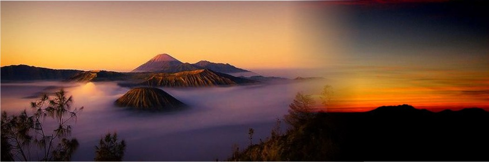
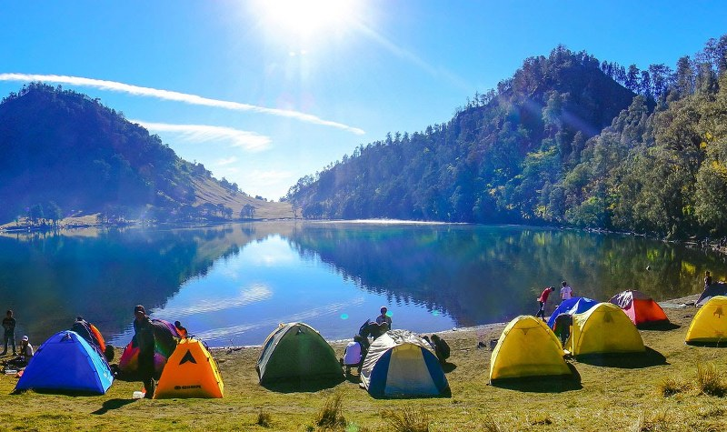
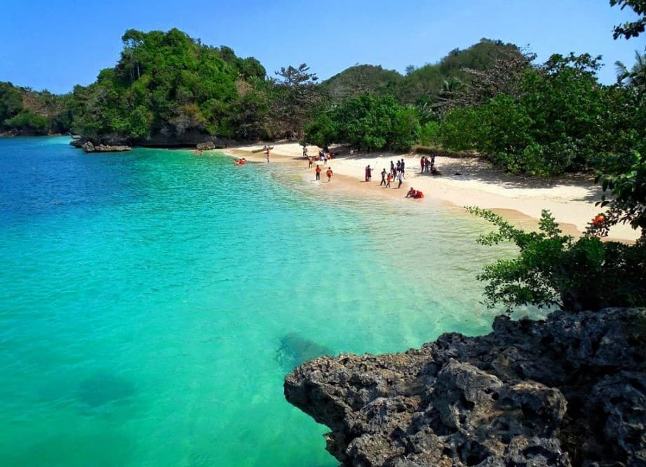
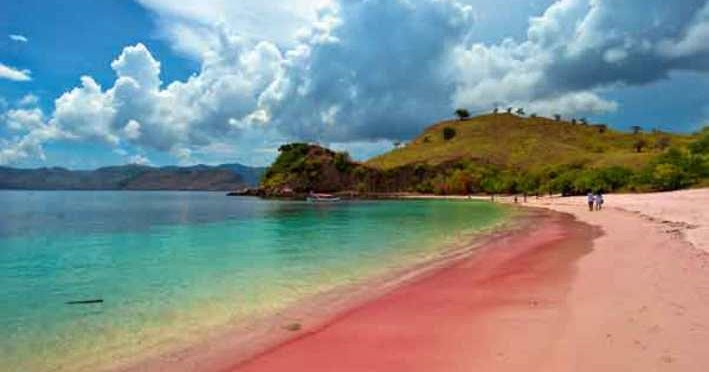

|Gunung Bromo|

Bisa dikatakan bahwa kawasan Gunung Bromo memiliki pemandangan alam yang paling indah di wilayah Jawa Timur. Kemegahan pemandangan alam Gunung Bromo, Gunung Semeru, Gunung Tengger, Gunung Batok bisa kita dapatkan dalam satu kawasan di Taman Nasional Bromo Tengger Semeru.
|Gunung Semeru|

Gunung Semeru kerap menjadi dambaan pendaki, terlepas dari usia dan daerah asalnya. Apalagi saat hari libur. Hal ini seakan lazim jika menilik keistimewaannya. Tidak hanya panorama yang indah, Semeru juga memiliki beberapa keistimewaan lain
Pantai
|Pantai Gatra|

Gatra adalah satu diantara pantai yang ada di area Clungup Mangrove Conservation. Wilayah konservasi ini juga mencakup sejumlah pantai terbaik di Malang, seperti Pantai Teluk Asmoro, Pantai 3 Warna, Pantai Clungup dan beberapa pantai lainnya. Khusus Pantai Tiga Warna, ada sistem reservasi jika ingin menikmatinya.
|Pantai Tiga Warna|

Mungkin ketika kalian mendengar kata Pantai Tiga Warna kalian sudah penasaran, memangnya ada hal istimewa apa yang membuat Pantai ini disebut Pantai Tiga Warna? Jadi, pantai ini memiliki warna yang sangat menarik. Seperti namanya Pantai Tiga Warna, pantai ini memang memiliki 3 warna berbeda yang sangat menarik. Pantai ini memiliki warna yang indah pada air lautnya yaitu warna merah, warna hijau dan juga warna biru. Warna-warni pantai ini dihasilkan oleh kedalaman air laut yang berbeda satu sama lain.